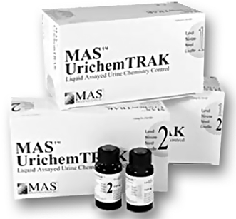
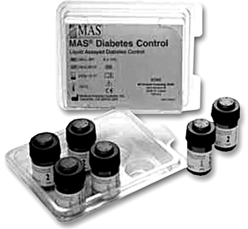

Productos de control
de calidad

DESCRIPCIÓN: Productos para control de calidad para las diferentes áreas de laboratorio de análisis clínicos.

CONTROLES PARA QUÍMICA CLÍNICA
• Para el control y monitoreo de los niveles de alcohol y amonio en suero, dos niveles.
• Para el monitoreo de bilirrubinas total, conjugada, libre y neonatal.
• Analitos para el monitoreo y el desarrollo de análisis en líquido cefalorraquídeo, dos niveles.
• Perfil completo de lípidos en dos niveles.
• Multianalitos para química en general y monitoreo de drogas terapéuticas, en tres niveles.
CONTROLES PARA QUÍMICA URINARIA
• Para el monitoreo de los analitos más comúnmente ensayados en química de orinas.
CONTROLES PARA URIANÁLISIS
• MAS URICHEM TRAK.
• MAS UA DIP TUBE.
• MAS UA CONTROL.
CONTROLES DE INMUNOENSAYOS
• Multianalito auxiliar en el monitoreo de inmunoensayos en instrumentos automatizados (valores conocidos).
• Control de valores conocidos para el monitoreo de drogas terapéuticas e inmunoensayos.
• Control líquido sin valores definidos, en tres niveles para el monitoreo de drogas de control terapéutico.
• Para el monitoreo de marcadores tumorales en instrumentos automatizados como: ABBOTT, AXSYM®, BAYER IMMUNO 1®, ADVIA CENTAUR®, ACS-180®, DPC IMMULITE®, ORTHO VITROS ECI®, ROCHE ELECSYS®, AND TOSOH AIA 600II®.
CONTROLES DE MARCADORES CARDIACOS
• Multianalitos para el monitoreo de marcadores cardiacos en suero.
CONTROLES DE SANGRE COMPLETA
• Diabetes (lyofhilized), multipack, bi-level.
• Diabetes (liquid), multi-pack, bi-level.
CONTROLES DE ENSAYO DE PROTEÍNAS SEROLÓGICAS/INMUNOLOGÍA
• Control inmunológico para el monitoreo de proteínas séricas y pruebas serológicas (antiestreptolisina “o”, PCR, pre albúmina y factor reumatoide).
CONTROLES TOXICOLÓGICOS
• Monitoreo de drogas de abuso para los reactivos de sistemas Abbott®..
• Monitoreo de métodos cuantitativos confirmatorios, cromatografía de gases y sistemas espectrométricos.
DROGAS INMUNOSUPRESORAS
• Cedia tdm calibradores: (ciclosporina).
• Cedia tdm controles: (ciclosporina y tacrolimus).
DATOS COMPLEMENTARIOS: Para mayores informes comunicarse a:
ACCUTRACK, S.A. DE C.V.
Teléfonos: (55) 5524-4481, 5524-2644, 5524-4575
e-mail: ventas@accutrack.com.mx
www.accutrack.com.mx